Buildings 66
Sort
 Price Tower1956 · Bartlesville
Price Tower1956 · Bartlesville Milwaukee Art Museum, Quadracci Pavilion2001 · Milwaukee
Milwaukee Art Museum, Quadracci Pavilion2001 · Milwaukee Palace of Justice (Punjab and Haryana High Court)1955 · Chandigarh
Palace of Justice (Punjab and Haryana High Court)1955 · Chandigarh State Library of Queensland2006 · Brisbane
State Library of Queensland2006 · Brisbane Deere & Company Administrative Center1964 · Moline
Deere & Company Administrative Center1964 · Moline Langer Eugen1969 · Bonn
Langer Eugen1969 · Bonn Hilton Istanbul1955 · Istanbul
Hilton Istanbul1955 · Istanbul Bienal Pavilion (Pavilhão Ciccillo Matarazzo)1954 · São Paulo
Bienal Pavilion (Pavilhão Ciccillo Matarazzo)1954 · São Paulo Independence Palace1966 · Ho Chi Minh City
Independence Palace1966 · Ho Chi Minh City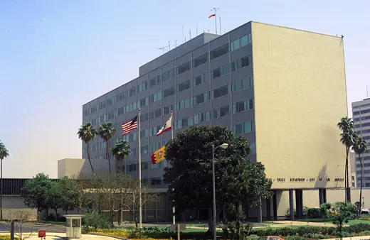
Parker Center1955 · Los Angeles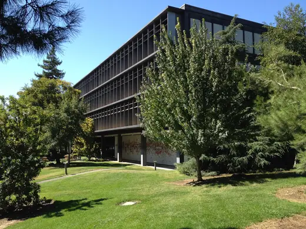
SMUD Headquarters Building1961 · Sacramento Palace of Assembly1962 · Chandigarh
Palace of Assembly1962 · Chandigarh Mill Owners' Association Building1954 · Ahmedabad
Mill Owners' Association Building1954 · Ahmedabad Carpenter Center for the Visual Arts1963 · Cambridge
Carpenter Center for the Visual Arts1963 · Cambridge Curutchet House1953 · La Plata
Curutchet House1953 · La Plata Holyoke Center (Smith Campus Center)1966 · Cambridge
Holyoke Center (Smith Campus Center)1966 · Cambridge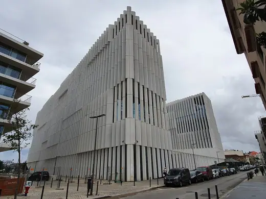
EDP Headquarters2015 · Lisbon University of Ibadanc. 1955 · Ibadan
University of Ibadanc. 1955 · Ibadan Atatürk Library1976 · Istanbul
Atatürk Library1976 · Istanbul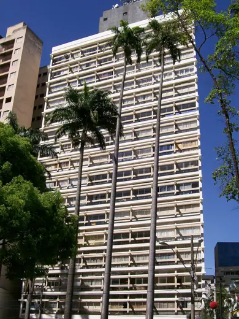
Itatiaia Building1957 · Campinas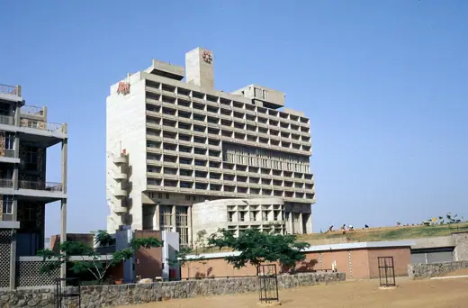
Akbar Bhawan (Akbar Hotel)1970 · New Delhi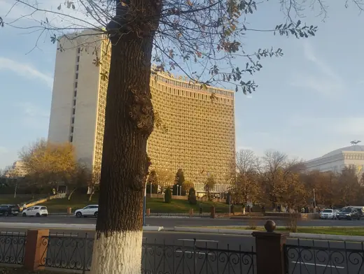
Hotel Uzbekistan1974 · Tashkent Malaysian Houses of Parliament1963 · Kuala Lumpur
Malaysian Houses of Parliament1963 · Kuala Lumpur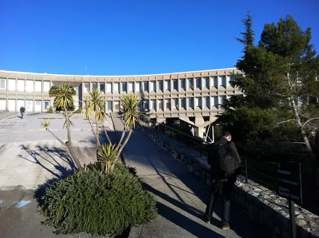
IBM Research Centre, La Gaude1962 · La Gaude New York Times Building2007 · New York
New York Times Building2007 · New York Milam Residence1961 · Ponte Vedra Beach
Milam Residence1961 · Ponte Vedra Beach Unité d'Habitation1952 · Marseille
Unité d'Habitation1952 · Marseille Amorepacific Headquarters2017 · Seoul
Amorepacific Headquarters2017 · Seoul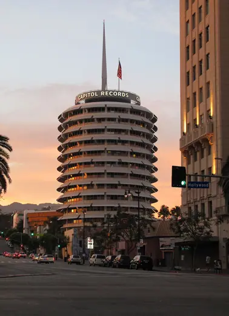
Capitol Records Building1956 · Los Angeles Torre BBVA Mexico2016 · Mexico City
Torre BBVA Mexico2016 · Mexico City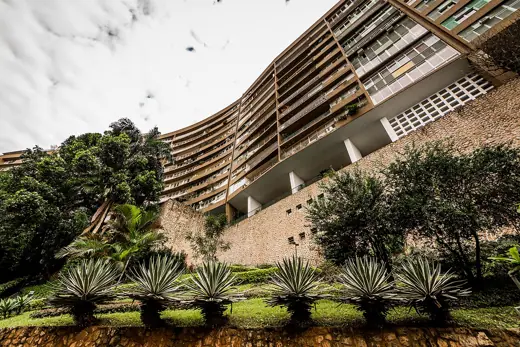
Parque Guinle1954 · Rio de Janeiro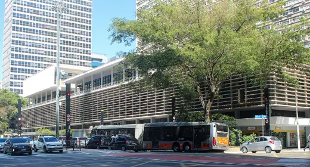
Conjunto Nacional1958 · São Paulo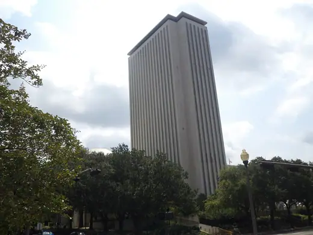
Florida State Capitol1977 · Tallahassee Menara Mesiniaga1992 · Subang Jaya
Menara Mesiniaga1992 · Subang Jaya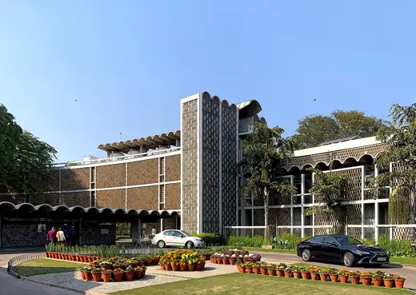
India International Centre1962 · New Delhi Singapore Conference Hall1965 · Singapore
Singapore Conference Hall1965 · Singapore Secretariat Building1953 · Chandigarh
Secretariat Building1953 · Chandigarh Copan Building1966 · Sao Paulo
Copan Building1966 · Sao Paulo Rietveld PavilionYear unavailable · Otterlo
Rietveld PavilionYear unavailable · Otterlo Beehive1981 · Wellington
Beehive1981 · Wellington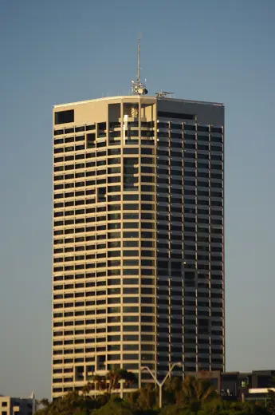
QV11991 · Perth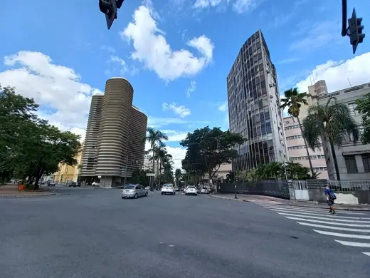
Edifício Niemeyer1960 · Belo Horizonte National Library Building2005 · Singapore
National Library Building2005 · Singapore Cité de Refuge (Salvation Army Hostel)1933 · Paris
Cité de Refuge (Salvation Army Hostel)1933 · Paris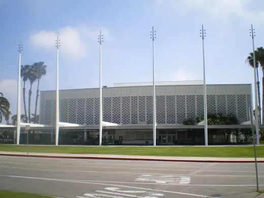
Santa Monica Civic Auditorium1958 · Santa Monica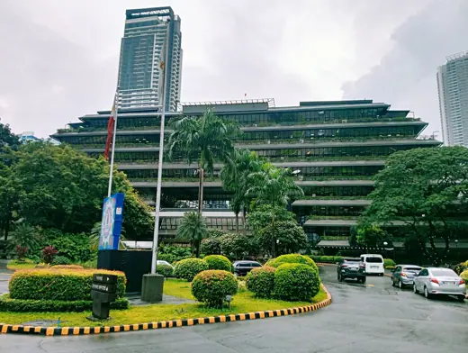
San Miguel Corporation Building1984 · Mandaluyong